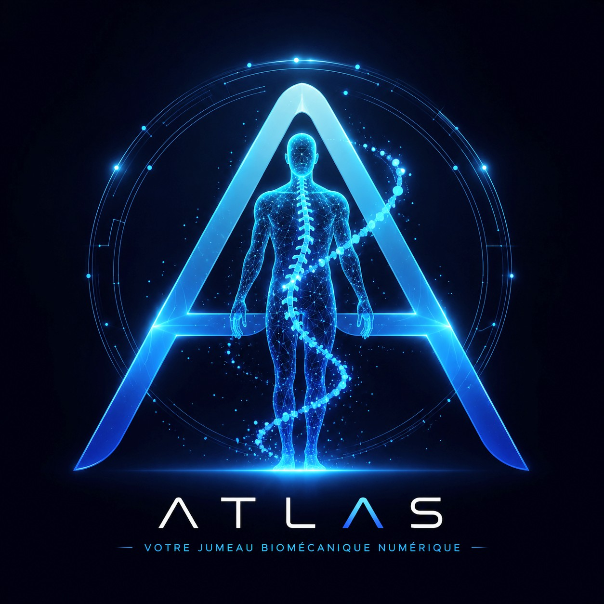

watch
DisponibleGarmin
- Charge d’entraînement
- Sommeil et récupération
- Fréquence cardiaque

ATLAS OS INITIALISATION

Création du jumeau numériqueInitialisation du jumeau
Chaque corps raconte une histoire. Atlas veille à ce qu’elle ne soit jamais oubliée.
Choisissez une ou plusieurs sources. Cette version simule les connexions.
La connexion des appareils est facultative pour cette démonstration.
Décrivez vos activités, vos douleurs, vos blessures, vos opérations et vos objectifs.
Analyse de votre profil biomécanique…
Vue synthétique de votre jumeau numérique.
Faites glisser le modèle, zoomez et changez de couche.
Chargement du jumeau 3D
Posez une question sur votre activité, votre récupération ou une zone corporelle.
Bonjour. Quelle partie de votre corps ou de votre entraînement souhaitez-vous explorer ?
Chronologie simulée de vos données et analyses.
Votre profil Atlas a été créé avec les informations fournies.
Les sources sélectionnées ont été ajoutées à la démonstration.
Gérez l’apparence de votre jumeau et les données de démonstration.
Jumeau masculin
Aucun appareil connecté
Les données sont enregistrées localement dans votre navigateur.
Effacez les choix enregistrés et recommencez l’expérience.